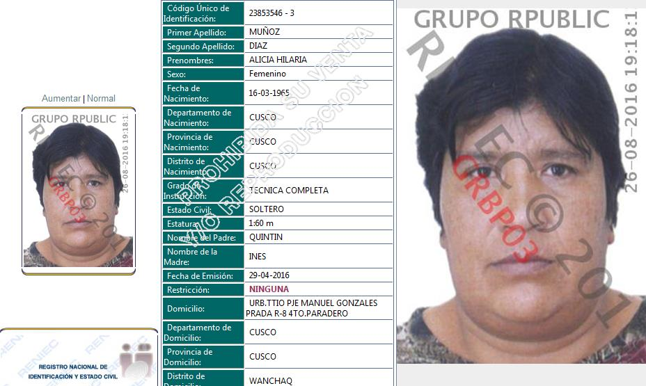

Con amenazas y violencia le ligaron las trompas a la señora Martina Camala Quispe, en 1996, el año donde todo empezó. El inicio de la época del terror para las miles de mujeres esterilizadas contra su voluntad a lo largo y ancho del Perú.
En la posta de Colquepata (distrito Colquepata, provincia Paucartambo, región Cusco),lugar donde más de cuarenta señoras han narrado a La República el atropello que se cometió contra ellas, los enfermeros Alicia y Hernán le dijeron a Martina para pasar al cuartito a curarse, para que de ahora en adelante le vaya mejor en la vida.
Ella se negó hasta el cansancio. Y empezaron las amenazas. Le dijeron que si no acataba las órdenes ni ella ni sus hijos podrían volver a atenderse en la posta. Qué ella y su esposo irían a la cárcel por oponerse al mandato del gobierno.
“Entre dos me han llevado adentro. Estírate, estírate, quítate, quítate tus ropas, así me decían. Me han puesto un vestido blanco. Estírate, me decían de nuevo, te vamos a poner una inyectable (anestesia) para que no llores, asi me han dicho...un mes tenía mi bebé que estaba conmigo ese día, ellos lo estaban agarrando a mi bebé, y yo me he quedado dormida”.
Misión cumplida. Martina había ido a la posta para el control de su bebé, y la esterilizaron a la fuerza. Hasta el día de hoy la tragedia no la deja dormir, y su esposo a raíz del hecho la maltrata como jamás lo hizo antes.
“Yo me siento mal por haberme hecho esto, maldecía mucho. Mucha preocupación tengo, para pensando en esto y de eso me paro enfermando”.
“Cuando he regresado a mi casa mi esposo con palo me ha pegado, me ha botado de la casa, me dijo: “Querías caminar con otros varones por eso te has hecho esa cosa, yo no te he dicho nada, tú tienes la culpa, tú sabrás cómo seguir adelante”, así me ha dicho”.
La República logró identificar a la enfermera de la posta de Colquepata que llevó a la señora Camala, bajo amenazas, a ligarse. Se llama Alicia Hilaria Muñoz Díaz.

“Esta es la señorita Alicia, la que me ha maltratado a mí, yo la maldigo a ella. Cuando yo le llevé a mi hijo a la posta ella me ha obligado a ligarme. Me dijo que si no me iba a llevar a la cárcel y que El Estado nunca más va a atender a mis hijos. Por eso yo le maldigo a esta señorita para siempre, porque por culpa de ella estoy así”, dijo indignada la señora Camala.
Más de 20 señoras ligadas a la fuerza en la posta de Colquepata contaron a La República que la enfermera Alicia las captaba con engaños, amenazas y a la fuerza para que las liguen.
Le mostramos su foto a tres señoras más, y al instante la identificaron. Ellas fueron: Seferina Castro Huamán (quién denunció en 1999 ante un juez de paz en Colquepata que la habían esterilizado en contra de su voluntad, La República obtuvo el documento de la denuncia), Juliana Yapo Flores y Nelly Quispe Huisa.
serafina
juliana yapo
nelly
La República buscó a la enfermera Alicia, ella nos dijo:
“No las forzamos, ni con policía hemos ido, es mentira lo que dicen...Ha sido con su consentimiento de ellas, no las hemos jalado a la fuerza. Quién soy yo para amenazarles, yo qué gano con esto, no me han pagado nada, solamente han sido órdenes”.
“No soy la única, están mis compañeros, nos han obligado y hemos cumplido como orden del estado...bien ha hecho el gobierno con esta campaña. Agua de chuño hervido les daban a sus hijos, los niños eran desnutridos, por eso mismo estoy de acuerdo, el gobierno ha implementado ese programa de esterilizaciones, nosotros solo hemos cumplido”.